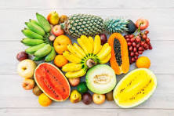

Fruits are good source of vitamins and minerals,recognized for their role in preventing Vitamin C and Vitamin A deficiencies.People who incorporate fruits and vegetables as a part of healthy eating pattern have a reduced risk of some chronic diseases.USDA's Myplate encouraging filling half of plate with fruits and vegetables at mealtime.Fruits are an important part of healthy eating pattern and the source of many vital nutrients including pottassium,folate and antioxidants including polyphenols.fruits such asd blueberries,cranberries,strawberries and citrus also contain photochemicals that are being studied for their added health benefits